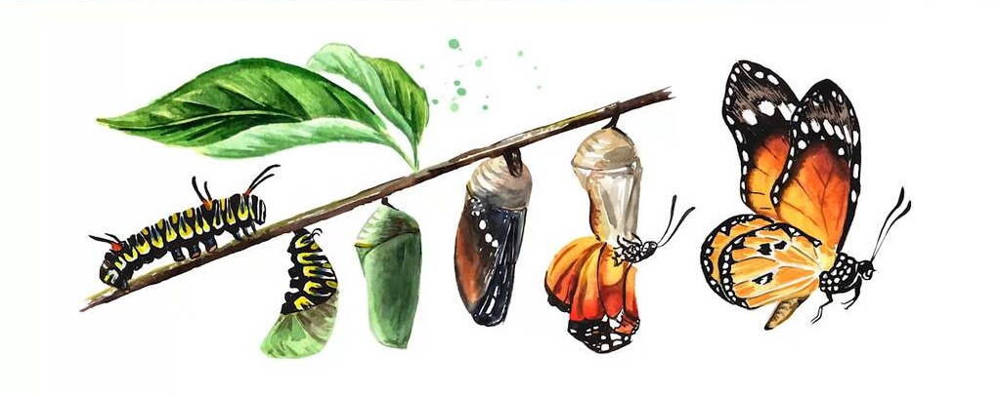

Select an Insect:

What is metamorphosis?
Insects undergo physical transformations known as metamorphosis. They can go through 3 different types of metamorphosis: ametabolous, hemimetabolous, and holometabolous. Each group corresponds with how dramatic the changes are, with ametabolous being very little to no change and holometabolous experiencing complete metamorphosis. Check each insect to see how the types of metamorphosis affects their growth!
Why metamorphosis is important
Metamorphosis is an integral key to why insects have been very successful. The diversity within each stage of the process allows insects to thrive in different environments and exploit distinct food resources. The process of metamorphosis has enabled insects to adapt and evolve rapidly to the world around them.